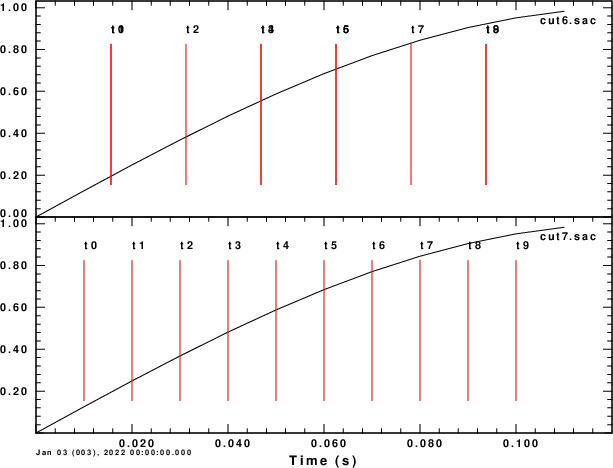

The number 0.15625 represented as a single-precision IEEE 754-1985 floating-point number. See text for explanation.

The three fields in a 64bit IEEE 754 float
SAC v102.0 introduced extended precision for certain floating point variables (< href="http://ds.iris.edu/files/sac-manual/manual/file_format.html">http://ds.iris.edu/files/sac-manual/manual/file_format.html). The reason for this is given in http://ds.iris.edu/files/sac-manual/manual/tutorial.html in the section entitled FLOATING-POINT PRECISON IN SAC. This section gives an example of how floating point numebrs are stored for use in a computer and gives graphic example of the problem addressed by sacv102.
This web page provides additional examples on the nature of floating point numbers and problem tat arise using sac or gsac
A discussion of the IEEE 754-1985 industry standard is given at
https://en.wikipedia.org/wiki/IEEE_754-1985 This web page
gives two examples of how 32-bit (float) and 64-bit (double)
floating point numbers are stored in binary.
|
The number 0.15625 represented as a single-precision IEEE 754-1985 floating-point number. See text for explanation. |
|
The three fields in a 64bit IEEE 754 float |
The important point to note is that computers cannot represent a continuum floating point numbers . Because of the finite number of bits in the mantissa (fraction), a continuum would plot as a series of steps.
This granularity is also exhibited in the process of printing a
floating point number, e.g., using printf in C. Consider
this C code named tprec.c:
#include#include char fmtstr[30]; #define FVAL 172800.05 #define NDEC 20 void main() { float fvar; double dvar; int i; fvar = FVAL; dvar = FVAL; printf("Comparison of printing single anddoulple precision values of 172800.05\n"); printf("using a format string of the form %%40.NDECf, e.g., %%40.10f\n"); printf(" ndec float double\n"); for (i=0;i < NDEC; i++){ sprintf(fmtstr,"%%5d %%40.%df %%40.%df\n",i,i); printf(fmtstr,i,fvar,dvar); } }
Then
gcc tprec.c
a.out
Comparison of printing single and doulple precision values of 172800.05
using a format string of the form %40.{NDEC}f, e.g., %40.10f
NDEC float double
0 172800 172800
1 172800.0 172800.0
2 172800.05 172800.05
3 172800.047 172800.050
4 172800.0469 172800.0500
5 172800.04688 172800.05000
6 172800.046875 172800.050000
7 172800.0468750 172800.0500000
8 172800.04687500 172800.05000000
9 172800.046875000 172800.050000000
10 172800.0468750000 172800.0500000000
11 172800.04687500000 172800.04999999999
12 172800.046875000000 172800.049999999988
13 172800.0468750000000 172800.0499999999884
14 172800.04687500000000 172800.04999999998836
15 172800.046875000000000 172800.049999999988358
16 172800.0468750000000000 172800.0499999999883585
17 172800.04687500000000000 172800.04999999998835847
18 172800.046875000000000000 172800.049999999988358468
First note that the single precision cannot represent the number
172800.05 perfectly. In single precision the nearest "bit"
for this number corresponds to 1721800.04687. Double
precision does better in represent the desired number. The second
point to note, is that extending the number of digits in the
format statement will yield a sequence of printed characters,
whose additional information is the result of the algorithm of
converting a float to a string. This algorithm decides what
character to print, e.g., 0 1 2 3 4 5 6 7 8 9, then divides by 10
and selects the character corresponding to the first digit. This
process can continue forever since the procedure may always yield
a value due to roundoff.
#include <stdio.h>
#include <stdlib.h>
#include <math.h>
#include "sacsubc.h"
/*
#define NPTS 10000000
#define DELTA 0.01
#define NA 9123456789
*/
#define NPTS 13
#define DELTA 0.01
#define NA 18246913578
void main()
{
int i;
float depmax, depmin, depmen;
int indmax, indmin;
float dt, b;
int npts;
float *arr;
int nerr;
float e;
float a;
double db, de, ddt;
double da;
float t0,t1,t2,t3,t4,t5,t6,t7,t8,t9;
float stla, stlo, evla, evlo;
double dstla, dstlo, devla, devlo;
double dt0,dt1,dt2,dt3,dt4,dt5,dt6,dt7,dt8,dt9;
stla = 0.0 ;
stlo = -105.0000003;
evla = 0.0 ;
evlo = -105.0;
dt = DELTA;
npts = NPTS;
arr = (float *)calloc(npts,sizeof(float));
/* initialiuze */
for(i=0;i < NPTS ; i++)
arr[i] = sin(6.2831853*2.0*i*DELTA);
b = 172800.;
t0 = b + 1*dt;
t1 = b + 2*dt;
t2 = b + 3*dt;
t3 = b + 4*dt;
t4 = b + 5*dt;
t5 = b + 6*dt;
t6 = b + 7*dt;
t7 = b + 8*dt;
t8 = b + 9*dt;
t9 = b + 10*dt;
e = b + (npts -1 )*dt;
scmxmn(arr,npts,&depmax,&depmin,&depmen,&indmax,&indmin);
newhdr();
setfhv("DEPMAX", depmax, &nerr);
setfhv("DEPMIN", depmin, &nerr);
setfhv("DEPMEN", depmen, &nerr);
setnhv("NPTS ",npts,&nerr);
setfhv("DELTA ",dt ,&nerr);
setfhv("TIMMAX ",b + indmax*dt, &nerr);
setfhv("TIMMIN ",b + indmin*dt, &nerr);
setihv("IFTYPE ","ITIME ",&nerr);
setfhv("B ",b ,&nerr);
setfhv("E ",e ,&nerr);
setfhv("T0 ",t0 ,&nerr);
setfhv("T1 ",t1 ,&nerr);
setfhv("T2 ",t2 ,&nerr);
setfhv("T3 ",t3 ,&nerr);
setfhv("T4 ",t4 ,&nerr);
setfhv("T5 ",t5 ,&nerr);
setfhv("T6 ",t6 ,&nerr);
setfhv("T7 ",t7 ,&nerr);
setfhv("T8 ",t8 ,&nerr);
setfhv("T9 ",t9 ,&nerr);
setfhv("EVLA ",evla,&nerr);
setfhv("EVLO ",evlo,&nerr);
setfhv("STLA ",stla,&nerr);
setfhv("STLO ",stlo,&nerr);
setlhv("LEVEN ",1,&nerr);
setlhv("LOVROK ",1,&nerr);
setlhv("LCALDA ",1,&nerr);
setnhv("NZYEAR ",2022,&nerr);
setnhv("NZJDAY ",1,&nerr);
setnhv("NZHOUR ",0,&nerr);
setnhv("NZMIN ",0,&nerr);
setnhv("NZSEC ",0,&nerr);
setnhv("NZMSEC ",0,&nerr);
setkhv("KT0 ","t0 ",&nerr);
setkhv("KT1 ","t1 ",&nerr);
setkhv("KT2 ","t2 ",&nerr);
setkhv("KT3 ","t3 ",&nerr);
setkhv("KT4 ","t4 ",&nerr);
setkhv("KT5 ","t5 ",&nerr);
setkhv("KT6 ","t6 ",&nerr);
setkhv("KT7 ","t7 ",&nerr);
setkhv("KT8 ","t8 ",&nerr);
setkhv("KT9 ","t9 ",&nerr);
bwsac(npts,"dut6.sac",arr);
dstla = 0.0 ;
dstlo = -105.0000003;
devla = 0.0 ;
devlo = -105.0;
db = 172800.;
ddt = DELTA;
dt0 = db + 1*ddt;
dt1 = db + 2*ddt;
dt2 = db + 3*ddt;
dt3 = db + 4*ddt;
dt4 = db + 5*ddt;
dt5 = db + 6*ddt;
dt6 = db + 7*ddt;
dt7 = db + 8*ddt;
dt8 = db + 9*ddt;
dt9 = db + 10*ddt;
fprintf(stderr,"dt0 %22.16g\n",dt0);
fprintf(stderr,"dt1 %22.16g\n",dt1);
fprintf(stderr,"dt2 %22.16g\n",dt2);
fprintf(stderr,"dt3 %22.16g\n",dt3);
fprintf(stderr,"dt4 %22.16g\n",dt4);
fprintf(stderr,"dt5 %22.16g\n",dt5);
fprintf(stderr,"dt6 %22.16g\n",dt6);
fprintf(stderr,"dt7 %22.16g\n",dt7);
fprintf(stderr,"dt8 %22.16g\n",dt8);
fprintf(stderr,"dt9 %22.16g\n",dt9);
de = db + (npts -1 )*dt;
setdhv("DELTA ",ddt ,&nerr);
setdhv("B ",db ,&nerr);
setdhv("E ",de ,&nerr);
setdhv("T0 ",dt0 ,&nerr);
setdhv("T1 ",dt1 ,&nerr);
setdhv("T2 ",dt2 ,&nerr);
setdhv("T3 ",dt3 ,&nerr);
setdhv("T4 ",dt4 ,&nerr);
setdhv("T5 ",dt5 ,&nerr);
setdhv("T6 ",dt6 ,&nerr);
setdhv("T7 ",dt7 ,&nerr);
setdhv("T8 ",dt8 ,&nerr);
setdhv("T9 ",dt9 ,&nerr);
setnhv("NVHDR ",7,&nerr);
setdhv("DELTA ",ddt,&nerr);
setdhv("EVLA ",devla,&nerr);
setdhv("EVLO ",devlo,&nerr);
setdhv("STLA ",dstla,&nerr);
setdhv("STLO ",dstlo,&nerr);
bwsac(npts,"dut7.sac",arr);
/* clean up */
free (arr);
}
gcc dsac.c sacsubc.c -lm -o dsac dsac
gsac GSAC> r cut?.sac GSAC> fileid list fname GSAC> bg plt GSAC> p GSAC> # creates P001.PLT which is then converted to an EPS and then a PNG
|  | |
GSAC> lh b e t0 t1 t2 t3 t4 t5 t6 t7 t8 t9 stla stlo evla evlo dist gcarc az baz npts nvhdr
dut6.sac (0):
NPTS 13 B 172800
E 172800.1 T0 172800
STLA 0 STLO -105
EVLA 0 EVLO -105
DIST 2.219911e-09 AZ 0
BAZ 180 GCARC 1.986611e-11
T1 172800 T2 172800
T3 172800 T4 172800
T5 172800.1 T6 172800.1
T7 172800.1 T8 172800.1
T9 172800.1 NVHDR 6
dut7.sac (1):
NPTS 13 B 1.7280000000000e+05
E 1.7280012000000e+05 T0 1.7280001000000e+05
STLA 0.0000000000000e+00 STLO -1.0500000030000e+02
EVLA 0.0000000000000e+00 EVLO -1.0500000000000e+02
DIST 3.339586e-05 AZ 270.0038
BAZ 90.00379 GCARC 3e-07
T1 1.7280002000000e+05 T2 1.7280003000000e+05
T3 1.7280004000000e+05 T4 1.7280005000000e+05
T5 1.7280006000000e+05 T6 1.7280007000000e+05
T7 1.7280008000000e+05 T8 1.7280009000000e+05
T9 1.7280010000000e+05 NVHDR 7
Writing a separate program to display the numbers actually
stored gives
True float double T0 172800.01 172800.01562 172800.01000 T1 172800.02 172800.01562 172800.02000 T2 172800.03 172800.03125 172800.03000 T3 172800.04 172800.04688 172800.04000 T4 172800.05 172800.04688 172800.05000 T5 172800.06 172800.06250 172800.06000 T6 172800.07 172800.06250 172800.07000 T7 172800.08 172800.07812 172800.08000 T8 172800.09 172800.09375 172800.09000 T9 172800.10 172800.09375 172800.10000
#!/bin/sh rm -f v6.sac v6.sac.lcalda v7.sac v7.sac.lcalda ##### # make a simple pulse ##### gsac << EOF fg delta 0.01 npts 13 gaussian alpha 30 w imp.sac # force lcalda false rh imp.sac ch lcalda false wh q EOF ##### # now that the pulse is defined, define the header values # the purpose here is to check the accuracy of computing distance # when the latitudes and longitudes are very close. # To make this test, one must set lcalda false so that the # internal double precision distances are not used ##### clear;reset;clear gsac << EOF # create v6.sac r imp.sac lh lcalda shift f 172800.06 lh lcalda w v6.sac r v6.sac lh lcalda ch t0 172800.01 ch t1 172800.02 ch t2 172800.03 ch t3 172800.04 ch t4 172800.05 ch t5 172800.06 ch t6 172800.07 ch t7 172800.08 ch t8 172800.09 ch t9 172800.10 ch kt0 t0 ch kt1 t1 ch kt2 t2 ch kt3 t3 ch kt4 t4 ch kt5 t5 ch kt6 t6 ch kt7 t7 ch kt8 t8 ch kt9 t9 # place the station about 0.1 meters from the epicenter ch evla 0.0 ch stla 0.0 ch evlo -105.0 ch stlo -105.0000003 lh lcalda evla evlo stla stlo dist az baz w # create v7.sac r imp.sac ch lcalda false w ch nvhdr 7 shift f 172800.06 w v7.sac r v7.sac ch t0 172800.01 ch t1 172800.02 ch t2 172800.03 ch t3 172800.04 ch t4 172800.05 ch t5 172800.06 ch t6 172800.07 ch t7 172800.08 ch t8 172800.09 ch t9 172800.10 ch kt0 t0 ch kt1 t1 ch kt2 t2 ch kt3 t3 ch kt4 t4 ch kt5 t5 ch kt6 t6 ch kt7 t7 ch kt8 t8 ch kt9 t9 # place the station about 0.1 meters from the epicenter ch lcalda false ch evla 0.0 ch stla 0.0 ch evlo -105.0 ch stlo -105.0000003 lh lcalda evla evlo stla stlo dist az baz w EOF ##### # In the test if the difference in longitudes is 3e-7 # now read the files, set lcalda true # and save the result with .lcalda set at the end ##### gsac << EOF r v?.sac lh lcalda ch lcalda true w append .lcalda lh lcalda q EOF gsac << EOF r v6.sac.lcalda v7.sac.lcalda lh evla evlo stla stlo dist gcarc t0 t1 t2 t3 t4 t5 t6 t7 t8 t9 q EOFwith output of
GSAC> lh evla evlo stla stlo dist gcarc t0 t1 t2 t3 t4 t5 t6 t7 t8 t9
v6.sac.lcalda (0):
T0 172800 STLA 0
STLO -105 EVLA 0
EVLO -105 DIST 2.219911e-09
GCARC 1.986611e-11 T1 172800
T2 172800 T3 172800
T4 172800 T5 172800.1
T6 172800.1 T7 172800.1
T8 172800.1 T9 172800.1
v7.sac.lcalda (1):
T0 1.7280001000000e+05 STLA 0.0000000000000e+00
STLO -1.0500000030000e+02 EVLA 0.0000000000000e+00
EVLO -1.0500000000000e+02 DIST 3.339586e-05
GCARC 3e-07 T1 1.7280002000000e+05
T2 1.7280003000000e+05 T3 1.7280004000000e+05
T4 1.7280005000000e+05 T5 1.7280006000000e+05
T6 1.7280007000000e+05 T7 1.7280008000000e+05
T8 1.7280009000000e+05 T9 1.7280010000000e+05
GSAC> q
For NVHDR=7 these display the values in the extended header
as double precision.